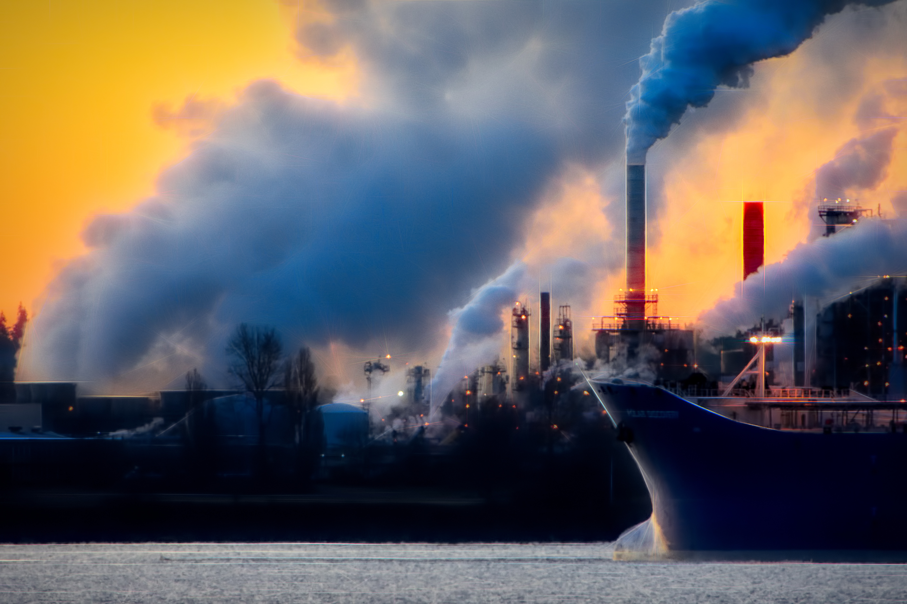

our recent posts


jan 3, 2023
Could this colourful plant-based film replace the need for air conditioning?
Energy-intensive, chemical-leaking air conditioning units take a devastating toll on our planet. Now, scientists at Cambridge University in the UK are working on an eco-friendly alternative. Their invention consists of a plant-based film that stays cool when exposed to sunlight.

jan 8, 2023
Wildlife crossings: US rolls out $350 million in funding to prevent collisions and improve habitats
The US Department of Transportation is rolling out funding for wildlife crossings along busy roads. Studies show than more than 350 million vertebrate animals are killed by traffic in the US each year. Meanwhile, about 200 people are killed each year in collisions involving wildlife and vehicles in the US, according to federal officials.